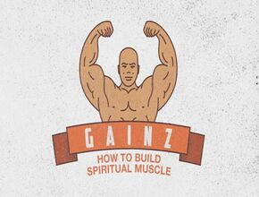

Articles Scientifiques

Gains en force et en hypertrophie musculaire : Sommes-nous tous égaux ?
Course à pied et hydratation : les astuces à ne pas manquer
Quelles sont les causes du butt wink au squat ?
Exercice et arthrite : la science dit qu’il faut rester actif
Quelle est la meilleure façon de récupérer d’un entraînement ?
Comment travailler sur la douleur via l’hypnose chez le sportif ?